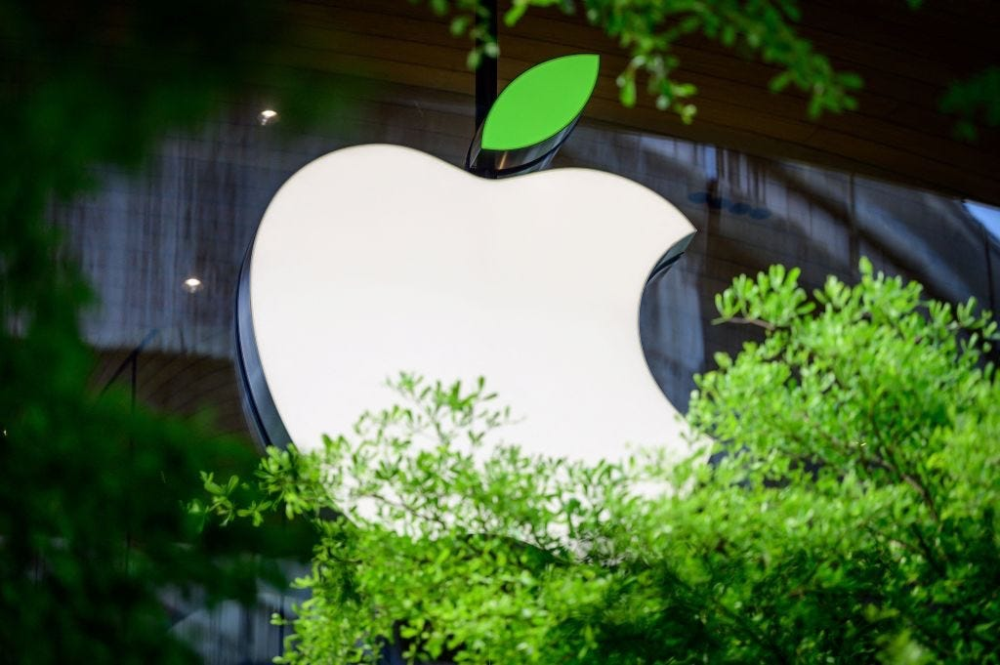

Tre teknologigiganter, tre forskjellige tilnærminger – alle på vei mot grønn koding og bærekraftig infrastruktur. Oppdag resultatene deres her.

Apple identifiserte energisluk i iOS, macOS og iCloud-datasentre. Med verktøy som CodeCarbon målte de karbonavtrykket live, og ved å gå over til fornybar energi i datasentre senket de utslipp.
Kodeoptimalisering fjernet unødige prosesser, slik at CPU-belastningen falt betydelig.
Energieffektive datasentre & grønn strøm.
Oppdaterte iOS & macOS kjerneprosesser.
Full karbonnøytralitet for produksjon & drift.
Google bruker AI (DeepMind) for å optimalisere kjøling og CPU i datasentre, noe som har kuttet energibehovet med opptil 40%. Google Cloud satser på 24/7 fornybar energi, og jobber kontinuerlig med grønn koding.
Gjennom strømlinjeforming av serverarkitekturen og flytting til mer bærekraftige datasentre har Google også redusert driftskostnader.
AI-basert kjøling i datasentre.
Google Cloud med helårs fornybar strøm.
DeepMind justerer ressursbruk i sanntid.
Microsoft planlegger å bli karbonnegative innen 2030. Ved å optimalisere kode i Azure, Windows og Office, samt investere i fornybar energi og karbonfangst, senker de energiforbruk og utslipp.
De bruker også CodeCarbon-lignende verktøy for å spore karbonutslipp i utviklingsprosessen og gjør løpende forbedringer for å nå bærekraftsmålene.
Microsofts offisielle bærekraftsmål.
Ytelsesoptimalisering reduserer serverbehov.
Nyeste teknologier for å senke CO₂-utslipp globalt.